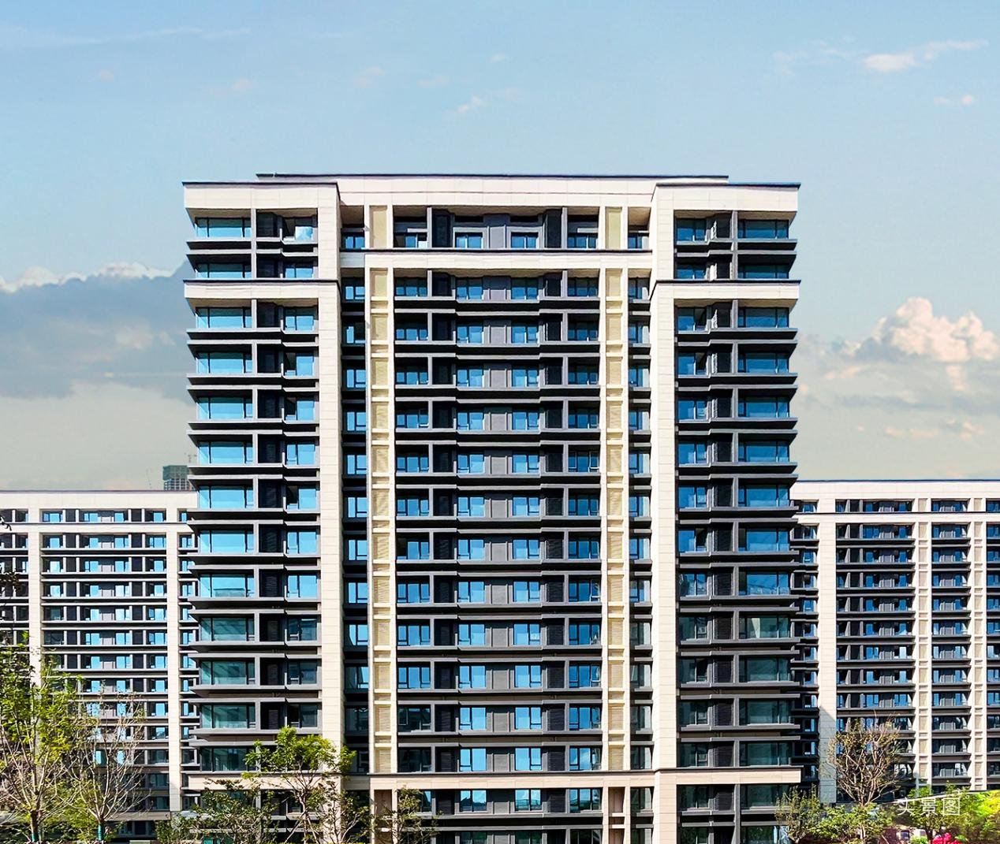

首页 > 正文
资本入场、双限解除，多重利好加持之下，如何置业？
忽如一夜春风来，千树万树梨花开。
近期，房地产行业的各种政策松绑以及宏观经济的各种刺激，在一定程度上拉动房地产板块的增长。利好之下，“抓住机遇买好房”已逐渐成为不少人口中的热门话题。
贷款利率放宽或年底回调 首套购房置业需趁早
今年以来，楼市利好不断，中央部门多管齐下支持房地产。尤其11月期间，政策层面支持力度明显加大。
从“第一支箭”信贷融资支持，到“第二支箭”债券融资支持，再到“第三支箭”股权融资支持，“三箭齐发”态势，为房企后续融资等创造了空间和机会。
截至目前，五年期LPR自8月下调至4.3%后进入相对稳定期，在中央及各地因城施策下，房贷利率稳定在历史低位。特别注意，9月29日出台的将首套房商业性个人住房贷款利率下限不低于LPR减20个基点的规定，阶段性放宽或截止至2022年12月31日。
对于刚需改善需求的的购房者来说，年底前或是购房红利窗口期。
马驹桥“双限购”解除 刚需置业上车最佳时刻
自2022年11月8日北京住建委、北京经开管委会、北京通州区政府联合发布了《关于加强亦庄新城台马地区商品住房管理的通知》。自此，最严“限购令”实施7年后，北京城市副中心通州区的台湖、马驹桥地区正式宣布解除“双限购”。
解除“双限购”的新政，对于在台湖、马驹桥两地附近及经开区工作的意向购房家庭无疑是个好消息，将释放购房刚需，也有利于进一步促进职住平衡。
2021年，亦庄经开区实现GDP2455亿元，位列北京第5，仅次于海淀、朝阳、西城、东城，增速位列全市第一。亦庄经开区目前4个千亿级产业分别为高端汽车制造、产业互联网、生物医药、新一代信息技术产业。区域未来发展也将不可限量。
首付130万元起 置业亦庄红盘
对于台马板块购房者来说，不仅有以上支持，随着双限解除，将极大承接亦庄核心区的外溢员工，乃至北京东部的购房人群，未来区域价值可期。
亦庄·金悦郡位于亦庄新城——马驹桥智能制造基地，高精尖产业云集，汇聚教育、医疗、商业、生态等全维配套于一体。内部建有约2300㎡商业、约4000㎡幼儿园，社区内用心呈现全龄、全时、全生命周期的至美景观，30%绿化率，点亮鲜氧宜居，容积率2.2，疏朗有致。

从人本需求出发，打造建面约72-118㎡二－四居，为首置人群提供了绝佳的上车机会。全部户型产品一梯两户、南北通透、大面宽、短进深、超大窗墙比…打造集舒适度、仪式感、私密性兼具的美好人居，将菁英美好生活一一呈现。